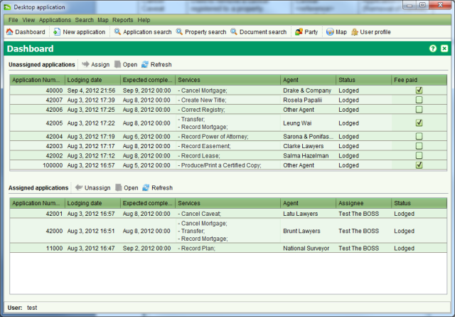

Dashboard and Main Menu
You will be presented with the Dashboard following successful
login. The Dashboard lists the applications that are assigned to
your user account along with
the applications that are yet to be assigned.

Using the main menu and toolbar options, you can perform the
following tasks;
- Exit the application (File > Exit or the Window Close
icon)
- Change the Language (View > Language)
- Change the Look and Feel template (View > Look & Feel)
- Navigate back to the Dashboard (Dashboard > Dashboard or
 )
)
- Create and lodge a new Application (Application > New
Application or
 )
)
- Search for an existing Application (Application > Search
Application or
 )
)
- Open the SOLA Map Viewer (Map > Ctrl + M or
 )
)
- View the SOLA Desktop About dialog (Help > About…)
- Open the SOLA Desktop Help (Help > Context Help)
- Select and assign an unassigned application (Right click menu or
 )
)
- Select and edit an unassigned or an assigned application (Right click menu or
 )
)
- Select and un-assign an assigned application (Right click menu or
 )
)
- Refresh the application lists (Right click menu or
 )
)
Also See